In questa sezione verranno presi in esame ulteriori comandi CLI che le varie versioni di IOS ci offrono.
Il simbolo "?" è molto importante, in quanto in qualsiasi modalità ci troviamo, permette di visualizzare tutti i comandi a nostra disposizione:
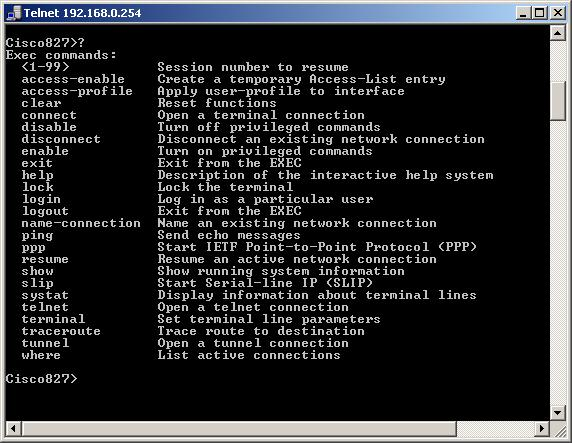
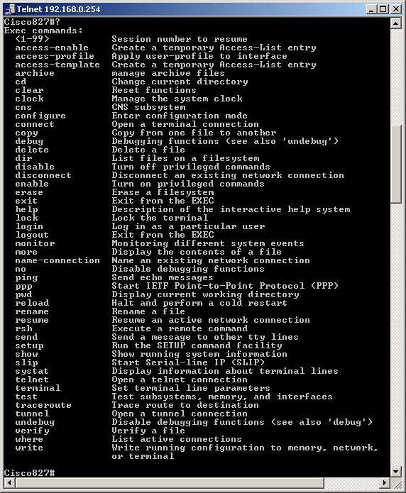
Qualora non conoscessimo la sintassi completa di un comando o il suo stesso nome, è possibile ricorrere sempre al simbolo "?", che ci mostrerà il resto della sintassi. Altro tasto utile è il TAB, che permette il completamento automatico della parola che si sta digitando. Logicamente questo tasto non funziona nel momento in cui c'è ambiguità con altro comando che inizia con le stesse lettere.
Uno dei tanti comandi che abbiamo già visto è "show config", che consiste nella visualizzazione della configurazione memorizzate nella NVRAM.
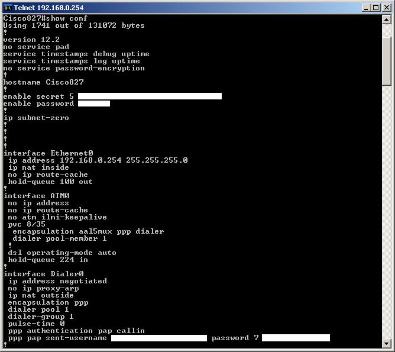
Altro comando già analizzato è "show vers", che ci permette di avere varie informazioni tecniche dell'apparato:
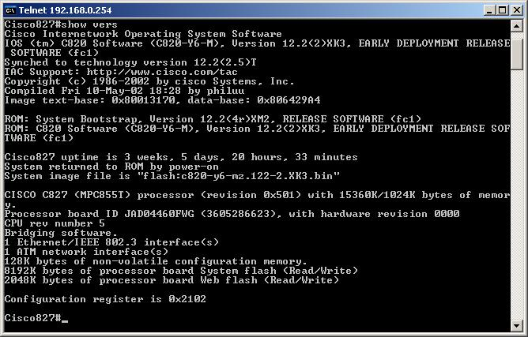
Per determinare lo stato e informazioni riguardo le interfacce del nostro apparato è possibile usare il comando "show interfaces":
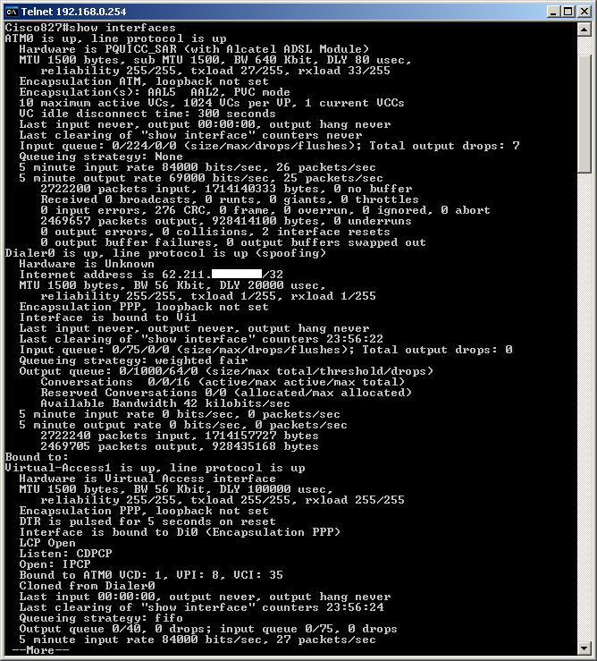
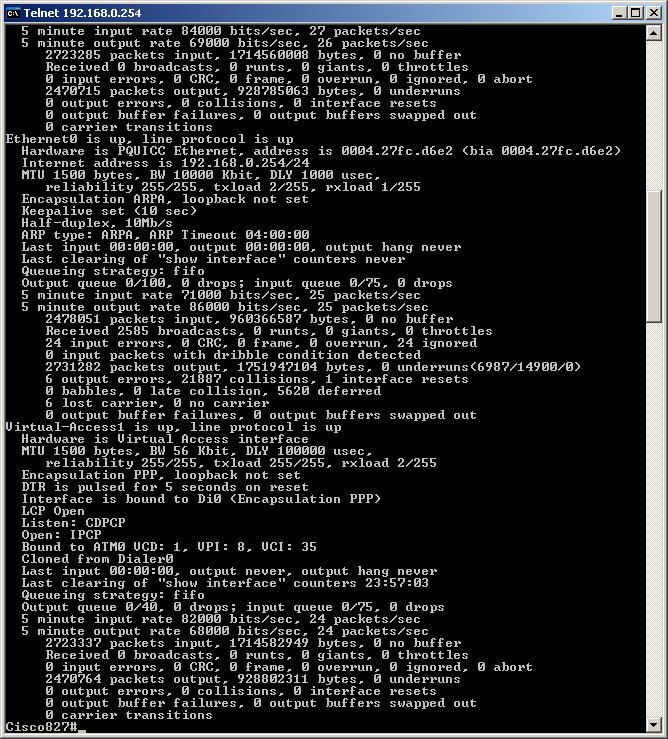
E' possibile visualizzare le stesse informazioni del comando precedente ma in modo separato per ogni tipo di interfaccia, attraverso i comandi "show interfaces ATM0", "show interfaces Dialer0" e "show interfaces Ethernet0":
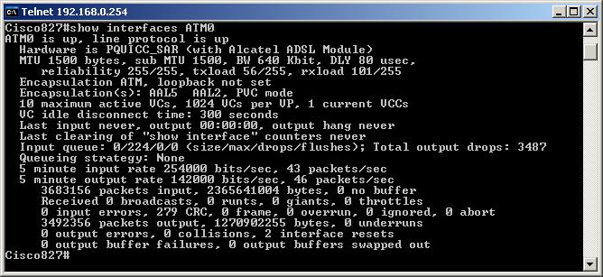
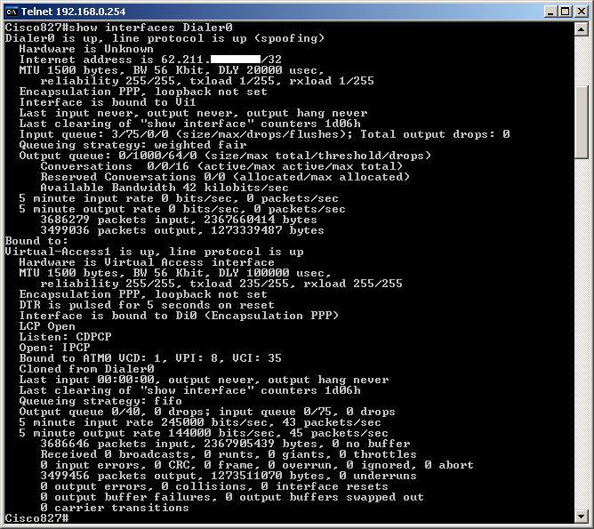
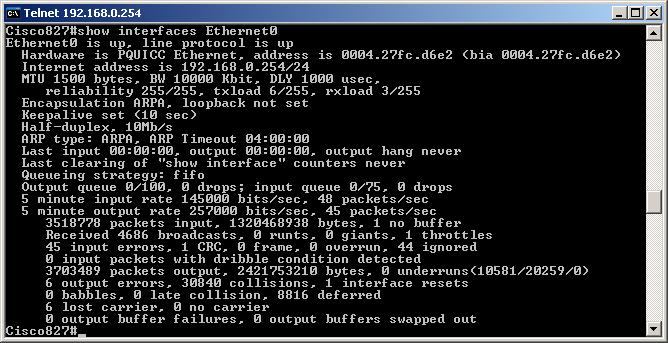
Attraverso il comando "show ip nat translations" possiamo visualizzare la treslezione degli indirizzi che effettua il router tra gli IP locali e l'unico IP pubblico esterno con le relative porte di utilizzo:
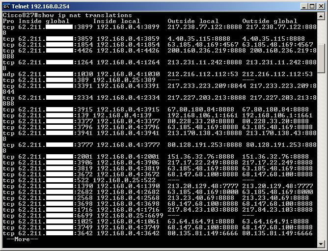
Il comando "show ip interface brief" ci permette di avere una panoramica sugli indirizzi assegnati alle varie interfacce disponibili e sul loro stato:
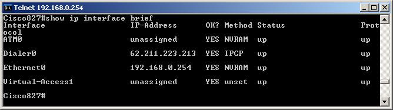
Router# show proccesses - Agisce a livello di Ram e mostra i processi attivi (più o meno come PID in WinNT o PS-AX in Unix).
Router# show protocols - Agisce a livello di Ram e visualizza i protocolli di livello 3 attivi e configurati (IP, IPX ecc). Visualizza lo stato delle interfacce (Up o down) e i relativi indirizzi logici.
Router# show memory - Agisce a livello di Ram e visualizza le allocazioni di memoria occupate con i relativi processi e/o programmi allocati.
Router# how stacks - monitorizza l’utilizzo dello stack dei processi e delle routine di interrupt e visualizza la ragione per l’ultimo riavvio di sistema
Router# Show buffers - fornisce statistiche per il buffer pools sul router
Show Arp - è un comando utilizzato per visualizzare l’IP dei router associato al MAC delle interfacce.
A questi comandi se ne aggiungono tanti altri, specifici per ogni tipo di esigenza. Per ulteriori informazioni si fà riferimento alla documentazione disponibile sull sito ufficiale della Cisco Systems.